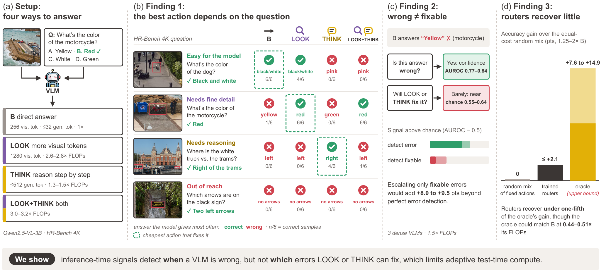

Explainer
Anonymous authors · under double-blind review
Adaptive test-time compute methods let a vision-language model decide, per question, whether to look closer or to reason first. We ask how much of the reported gain comes from that per-question decision itself. Measured against an equal-cost random allocation of the same actions, very little: confidence tells a router that an answer is wrong, not whether extra compute will fix it.
Paper, code, and per-sample outcome records will be released after review
A VLM can spend extra inference compute by encoding the image with more visual tokens (LOOK), by reasoning step by step before answering (THINK), or both. Neither helps every question. The best action depends on the question, some questions stay wrong under every action, and the signal a router has at inference time identifies errors far better than it identifies fixable errors.

Figure 1. (a) Four inference actions. (b) The best action varies by question; some questions remain wrong under every action. (c) Confidence detects incorrect answers more reliably than it identifies errors another action will correct. (d) Trained routers recover only a small part of the improvement available to an oracle that knows which action works for each question.
LOOK and THINK fix different questions. A held-out oracle that picks each question's action gains 4.8–9.8 points over the best fixed action, or matches baseline accuracy at 0.44–0.51× its FLOPs.
Trained routers gain at most 2.1 points over the equal-cost random mix, under one-fifth of the oracle's gain. The published VisionThink does not beat an equal-FLOPs mixture of its own fixed configurations.
Confidence detects wrong answers (AUROC 0.77–0.84) but barely predicts fixable ones (0.55–0.64). Knowing which errors an action fixes is worth 8.0–9.5 points more than knowing which answers are wrong.
When an adaptive method beats a fixed setting, the gain may come from the actions themselves, from the training that produced the policy, or from the per-question decision. An audit of the seven most closely related papers (VisionThink, AVR, AVIS, SPARC, DIRECT, Thinkless, VL-RouterBench) finds that published comparisons do not separate them, for three reasons.
An adaptive policy is usually compared with one fixed setting, so it may win simply by spending more compute on average. The baseline that isolates the decision is a random allocation of the same fixed actions at the same measured cost. None of the seven papers reports it.
Fixed baselines often use the untrained base model or a separately trained one, so a gain may come from training rather than from the choice. Fixed actions should use the adaptive policy's own trained weights.
Oracle estimates that select an action because one sampled answer is correct, and then score that same answer, reward lucky draws. With one sample per action this overstates the headroom by 10–20 points.
For every question and action we draw K = 20 independent samples (10 for DeepSeek-VL2-Small). A sample's correctness is never counted as an extra question; the fraction of correct samples estimates the action's success rate on that question. A policy must beat the cost-matched random mix below to show that its question-specific decisions add anything.
B: direct answer, ≤256 visual tokens, ≤32 generated tokens. LOOK: 1280 visual tokens (2.6–2.8× FLOPs). THINK: step-by-step reasoning, ≤512 tokens (1.3–1.5× FLOPs). LOOK+THINK: both (3.0–3.2×). B64 and B128 use fewer visual tokens.
Whenever samples inform a decision (picking an oracle action, training a router) each question's samples are split into a selection half and a scoring half. A decision is never scored on a sample that informed it; results average over up to 200 random splits.
Pre-routers pick an action from question and image features before any answer exists. Cascades run a cheap action first and use its answer and confidence (token log-probabilities, entropy, margin, optional hidden-state probe) to keep it or escalate. Cost includes both actions.
Costs are reported in both FLOPs and latency (batch size 1 on a T4, R² ≥ 0.994 linear fit), relative to B. Confidence intervals resample whole images, since several questions can share one image.
Models. Three dense VLMs (Qwen2.5-VL-3B, Qwen3-VL-2B, LFM2.5-VL-3B) and two mixture-of-experts VLMs (DeepSeek-VL2-Tiny and -Small). Data. 600 questions from 364 images: 200 each from ChartQA (exact chart values), MMStar (small images), and the 4K split of HR-Bench (median 4032 × 4032 pixels). Case study. The published VisionThink, re-run with its released weights and a token-exact port of its two-turn inference code.
THINK's average effect ranges from −8.4 to +7.2 points across models, but on all five models it helps where the baseline usually fails (+7.2 to +27.9 points on the hardest questions) and hurts where it usually succeeds (−8.2 to −36.1 on the easiest). LOOK also helps most on hard questions but rarely hurts. THINK costs only 1.3–1.5× the FLOPs yet takes 13–19× longer, because it generates many tokens one at a time.
| Action | Qwen2.5-VL-3B | FLOPs | Qwen3-VL-2B | FLOPs | LFM2.5-VL-3B | FLOPs |
|---|---|---|---|---|---|---|
| B64 | 36.4 | 0.35× | 34.3 | 0.36× | 45.7 | 0.36× |
| B128 | 49.1 | 0.57× | 49.2 | 0.58× | 60.3 | 0.59× |
| B (baseline) | 59.3 | 1.00× | 53.9 | 1.00× | 64.2 | 1.00× |
| LOOK | 63.4 | 2.75× | 56.7 | 2.64× | 68.9 | 2.62× |
| THINK | 50.9 | 1.32× | 61.2 | 1.51× | 65.9 | 1.37× |
| LOOK+THINK | 56.0 | 3.07× | 65.1 | 3.15× | 69.1 | 2.99× |
Table 1. Accuracy (%) on 600 questions, 20 samples per question; FLOPs relative to each model's baseline B. No single fixed action is best across models.
With one sample per action, scoring the oracle on its own selection sample gives 85.2%, 78.9%, and 85.3% on the three dense models, 10 to 20 points above the held-out estimate. On Qwen2.5-VL-3B it claims +20.8 points over the best fixed action where the held-out oracle finds +1.2. Selecting on 10 samples and scoring on 10 others, most of the real gain comes from adding THINK to the menu.
| Policy | Qwen2.5-VL-3B | Qwen3-VL-2B | LFM2.5-VL-3B |
|---|---|---|---|
| Best fixed action | 64.4 (2.62×) | 65.1 (3.15×) | 69.1 (2.99×) |
| Oracle over {B, LOOK} | 64.7 (1.55×) | 58.6 (1.40×) | 70.8 (1.40×) |
| Oracle over all four | 69.2 (1.69×) | 71.1 (1.78×) | 78.9 (1.60×) |
| Oracle − best fixed (pts) | +4.8 [3.5, 6.3] | +6.0 [4.4, 7.9] | +9.8 [7.7, 12.2] |
Table 2. Held-out oracles: accuracy (%) and relative FLOPs. The oracle uses ground-truth answers, so it is an upper bound on what routing can add, not a deployable policy. A cost-aware oracle matches baseline accuracy at 0.44–0.51× its FLOPs, almost entirely by giving fewer visual tokens to questions that do not need them.
At 1.25–2× the baseline FLOPs, trained cascades (logistic regression and gradient-boosted trees) beat the best random mix by 1.1–1.5 points on Qwen2.5-VL-3B, against 7.6–9.2 for the oracle, and by at most 1.4 and 2.1 points on the other two models, against 10.5–14.9. The gain is consistent across five repeats but small. Under the same protocol, VisionThink's decision carries signal against a random choice between its own two resolutions, but not against a mixture of all its fixed configurations.
| VisionThink routing gain vs. equal-cost random mix of… | at equal FLOPs | at equal latency |
|---|---|---|
| its two resolutions (low, low→full) | +2.4 [1.1, 3.8] | +1.7 [0.6, 2.9] |
| all of its fixed configurations | +0.7 [−2.0, 3.1] | −4.5 [−8.3, −0.7] |
Table 3. VisionThink (RL-trained Qwen2.5-VL-7B) re-run on our 600 questions with its released weights. Giving the model the full image first is 4.8 points more accurate at the same latency, because escalation pays for a second decoding phase. Comparisons with the untrained base model cannot reveal this.
LOOK, THINK, and LOOK+THINK correct a wrong baseline answer only 17–42% of the time, and among questions the baseline almost always gets wrong, 35–44% stay wrong under every other action. Holding the escalation action (LOOK+THINK) and budget (1.5× FLOPs) fixed and changing only which answers are escalated isolates what each kind of knowledge is worth.
| Escalate… (gain in pts over the row above) | Qwen2.5-VL-3B | Qwen3-VL-2B | LFM2.5-VL-3B |
|---|---|---|---|
| at random (equal-cost mix) | reference | reference | reference |
| least confident answers (deployable) | +0.7 to +1.6 | below the mix | −0.2 to +1.7 |
| all wrong answers (perfect error detection) | +3.4 | +2.6 | +4.3 |
| fixable errors only (perfect fixability) | +8.3 | +9.5 | +8.0 |
Table 4. Escalation rules at 1.5× baseline FLOPs. The last two rows use true outcomes and are diagnostic upper bounds. A question-level version that knows only each question's success rate from the other 19 samples still adds 4.4–7.4 points over perfect error detection: half to four-fifths of the fixability gain is a property of the question, not of a lucky sample.
Before deploying a router, compare it with a random mixture of the same fixed actions, using the same weights and the router's measured average cost. Report both FLOPs and latency: saving FLOPs does not imply lower latency when a policy generates long answers or decodes twice. When the gain is small or uncertain, prefer a fixed action or a validated fixed-action mixture.
Evaluate whether an action corrects an error separately from whether a policy predicts that correction. Select and score oracles on separate samples. Train routers to predict whether a given action will correct an answer, not whether the answer is uncertain; an action's held-out success rate per question is a natural training target.
The results do not show that adaptive computation cannot help. They show that its benefit has to be measured against the same actions allocated without looking at the question.
Five small VLMs (at most 3.75B dense parameters), three benchmarks, one prompted reasoning style with a 512-token limit, and the routers tested here. Larger models or other signals may behave differently.
One greedy sample per question, float16, full images capped at 1280 visual tokens, and our own scorer; only the within-model comparison is meaningful.
The oracle and fixability rules use ground-truth outcomes and are not deployable; predicting fixability is the open problem. FLOP counts omit attention, and the dense versus MoE comparison is confounded by model family and quantization.